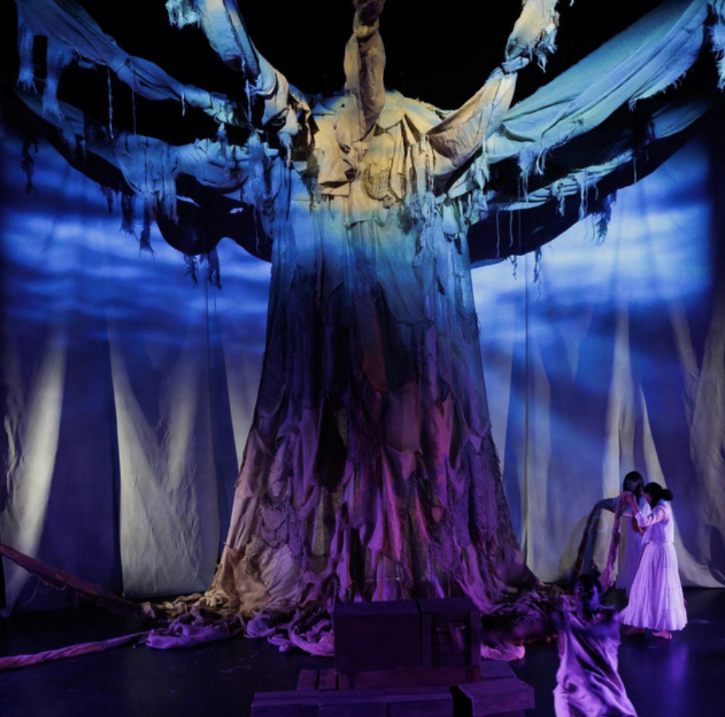

Motherloss
When Dwayne meets his long lost mother in a dream, he leaves behind everything he’s ever known to go find her. In a fantastical journey through space and time, Motherloss follows Dwayne as he retraces his mother’s steps from the Gold Coast, through the Middle Passage, to the New World. On the way, he meets strangers, tricksters, and unexpected guides who teach him how to traverse a history of loss and grief, and how to hold those closest to you near.
In this production, my work focused on assisting the main sound designer to capture a wide range of performances and building a sound world that supports every way of the journey. The mix leans into breath, water, powerful drums and choirs that make the audience understand Dwayne’s inner life while letting the score and textures quietly carry the emotional weight of his story.
- A production of UCSD MFA theatre and Dance program (La Jolla Playhouse)
- Playwright: Mylan Gray
- Director: Ludmila de Brito
- Scenic Designer: Muting Fan
- Costume Designer: Kimberly Kocol
- Lighting Designer: Spencer Duff
- Sound Designer & Co-Composer: Scarlett Shi
- Co-Composer: Jordan Davidson
- Assistant Sound Designer: Jerson Rivas
- Cultural Consultant: Kara Mack
- Production Stage Manager: Stephanie Carrizales
- Audio and Video Supervisor: Steve Negrete

Listen
Selected moments that blend drums, voice, water, and ambience.
Excerpt — Baobab Circling
Excerpt — Through Line of Baobab
Excerpt — Rinha

Take Me to the Water
Listen on Spotify
Project Overview
The core of Motherloss lives in its emotional performances. Emotional choirs, sung fragments, and quiet exchanges that sit right on the edge of audibility. The goal was to capture that intimacy as honestly as possible and then support it with a mix that breathes alongside the actors without feeling overproduced.
Water is a recurring motif in the work, so we leaned into subtle, textural layers that feel like reflections and ripples. The sound design is less about jump scares or spectacle and more about holding space, guiding the audience through grief, release, and moments of peace.
My Responsibilities
- Recorded vocal performances.
- Recorded live african drums performances
- Shaped the overall sonic scape to support key narrative and emotional events.
- Collaborated closely with the creative team to refine cues and transitions.
- Assisted in capturing and preparing the final audio deliverables of the performance.
- Maintained clear communication with the stage management and technical teams to ensure smooth rehearsals and performances.
- Helped troubleshoot audio issues during rehearsals and live performances.
Technical Notes
- DAW: Ableton Live for editing, processing, and mix sessions.
- Focused on gain staging and use of different effects to enhance the emotional impact.
- Used layered water textures and subtle reverb to unify the sonic space.
- Sound routing and monitoring during live performances.
- Delivered stems and print masters suitable for rehearsal and performance needs.
- Playback & cueing: QLab, with detailed cue lists and safety backups.
- Remote video monitoring and use of Dante